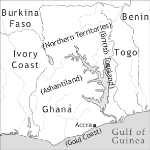

by Magnus Huber

Ghanaian Pidgin English is used by roughly a fifth of Ghana’s over 25 million inhabitants (2012) in variety of situations. Modern Ghana is a coastal West African country and consists of Britain’s former Gold Coast colony, Ashantiland, the Northern Territories, and British Togoland. The official language is English, which is predominantly used in formal contexts, e.g. the educational system and the media. Ghanaian Pidgin English is part of the West African Pidgin English continuum, which includes the varieties spoken in Sierra Leone (the creole Krio), Ghana, Nigeria, Bioko and Cameroon.1 The many similarities between the restructured Englishes spoken in these countries can to a large part be explained by the fact that the Ghanaian, Nigerian, and Cameroonian varieties are descendants of Krio (see below and Huber 1999a: 75–134 for details).
Estimates of the number of indigenous Ghanaian languages range from 50 (Kropp Dakubu 1988: 10) to 80 (Lewis 2009). The major languages in terms of speaker numbers belong to two branches of Niger-Congo languages: (1) the Kwa branch (southern Ghana): Akan (c. 43%), Ewe (c. 10%), Ga-Dangme (c. 7%), (2) the Gur branch (northern Ghana): Dagaare (c. 6%), Dagbani (c. 3%). There are also two very small pockets of Mande languages. Kwa languages thus account for at least 60 per cent of the first languages of Ghanaians. The major languages Akan, Ewe, Dangme, Ga, Nzema, Dagaare, Gonja, Kasem and Dagbani enjoy national language status. Hausa, which was introduced to northern Ghana several generations ago by traders from Nigeria, enjoys some status as a lingua franca in the North and in linguistically heterogeneous quarters in the southern cities.
The main objective of early Afro-European contacts in West Africa was trade. In 1471, the Portuguese reached what soon came to be called the Gold Coast. Their trading monopoly lasted until the early part of the 17th century, when the Dutch, and later the English, established themselves on the coast. Other European nations followed suit, and different pidgins developed alongside pidginized Portuguese. The latter fell out of use only in the second half of the 18th century, long after the Portuguese had lost their supremacy on the Gold Coast. Pidgin English, which came into being in the second half of the 17th century, was the only contact variety that survived into the 20th century. Structurally, this early trade Pidgin English was considerably simpler and more variable than today’s Ghanaian Pidgin English. The first textual attestation comes from a Royal African Company trader’s diary entry in 1686, reporting some 50 words of an Anomabu trader (see Huber 1999a: 40ff for a discussion of this and other early texts).
The formation of Ghanaian Pidgin English as it is today took place during British colonial rule in West Africa. From the 1840s onwards, Africans liberated from slave ships by the British navy and settled on the Sierra Leone peninsula, some 1,500 km west of Ghana, went back to their respective places of origin, thus spreading an early form of Sierra Leonean Krio along the West African coast, Nigeria in particular. Historical and linguistic evidence indicates that in the 1920s migrant workers introduced the Nigerian offshoot of Krio to the Gold Coast, where it replaced the earlier trading pidgin (for more detailed information on the history of Ghanaian Pidgin English, see Huber 1999a, 1999b, 2004a, 2004b).
Twi, comprising the non-Fante dialects of Akan, is the main areal lingua franca in Ghana’s south. Ghanaian Pidgin English, locally known as Pidgin (English), Broken (English), and formerly as Kru English or kroo brofo (the Akan term), is a predominantly oral and urban phenomenon. It is spoken in the southern towns, especially in the capital Accra. Ghanaian Pidgin English is confined to a smaller (though growing) section of society than Pidgin English in other anglophone West African countries, probably because of the strong position of Twi as a lingua franca. Also, its functional domain is more restricted and the language is more stigmatized, although this situation is currently changing rapidly. Pidgin is not officially recognized as a language of Ghana and there is no standardized orthography. The few grammatical descriptions are purely scholarly works.
There are two main Ghanaian Pidgin English varieties. Basilectal Ghanaian Pidgin English is associated with the less educated sections of society, while more mesolectal/acrolectal Ghanaian Pidgin English (also called “Student Pidgin”) is usually spoken by Ghanaians who have at least progressed to the upper forms of secondary school, if not to the universities. The basilectal Ghanaian Pidgin English is the default lect documented in the APiCS database and described in this article. This variety can be heard in the so-called zongos, quarters in the bigger southern cities which are home to migrants from Ghana’s north but also from neighbouring countries like Mali and Burkina Faso.
The difference between the two Ghanaian Pidgin English varieties lies not so much in their linguistic structure (the main differences are lexical, and the two are largely mutually intelligible) as in the functions they serve. Basilectal Ghanaian Pidgin English is used as a lingua franca in highly multilingual contexts, e.g. in Accra’s immigrant quarters Nima, Kanda, or Mamobi, which are characterized by a high degree of linguistic heterogeneity and a generally low educational attainment. The more acrolectal varieties, however, are better characterized as male in-group languages whose main function is to express group solidarity rather than to fulfil basic communication needs, since Standard (Ghanaian) English is available to all parties in these settings and could be resorted to if no common indigenous language were at hand. Pidgin entered Ghanaian secondary schools around the mid-1960s and was soon carried into the universities, where it is today used predominantly by male students on campus, in students’ bars, and the halls of residence. Because Pidgin was and is more stigmatized in Ghana than in e.g. Nigeria, it remained a male domain for a long time, but recently female pupils and students have started using it. Pidgin has also made its way into the home, where it is now used mainly among brothers with secondary education, often to the exclusion of the Ghanaian languages. Pre-school children of middle class families appear to pick up Ghanaian Pidgin English from their fathers. Today, educated urban males under 50 years of age can be expected to switch to Pidgin in informal settings. The educated variety is currently spreading fast and is being used in more and more contexts.
As shown in Table 1, Ghanaian Pidgin English has seven (or nine) monophthongal oral vowels (some speakers making length distinctions between /i/-/iː/ and /u/-/uː/). Since all monophthongs can be nasalized, the loss of a nasal consonant after a nasalized vowel can lead to a phonemic opposition between oral and nasal vowels, e.g. hapi ‘happy’ vs. hapĩ ‘happen’. There are six diphthongs, /ai, au, ɔi, iɛ, ɛa, uɔ/. The last three occur only in <Vr> sequences in words derived from the lexifier, e.g. beer, chair, and sure. /ɛa/ and /uɔ/ are often reduced to the monophthongs /ɛ/ and /ɔ/ as illustrated in ripɛ ‘repair’ or pɔ ‘poor’.
|
Table 1. Vowels |
|||
|
front |
central |
back |
|
|
close |
i(ː) |
u(ː) |
|
|
close-mid |
e |
o |
|
|
open-mid |
ɛ |
ɔ |
|
|
open |
a |
||
The consonants are shown in Table 2. Consonants in round brackets only occur in ideophones or African loans.
|
Table 2. Consonants |
|||||||||
|
bilabial |
labio-dental |
labio-velar |
alveolar |
post-alveolar |
palatal |
velar |
glottal |
||
|
plosive |
voiceless |
p |
(k͡p) |
t |
k |
||||
|
voiced |
b |
(g͡b) |
d |
g |
|||||
|
nasal |
m |
n |
(ɲ) |
ŋ |
|||||
|
trill |
[r] |
||||||||
|
fricative |
voiceless |
f |
s |
ʃ |
h |
||||
|
voiced |
v |
z |
|||||||
|
affricate |
voiceless |
ʧ |
|||||||
|
voiced |
ʤ |
||||||||
|
approximant |
w |
[ɹ] |
j |
||||||
|
lateral approx. |
l |
||||||||
Like Ghanaian English, Ghanaian Pidgin English is a non-rhotic variety, i.e. post-vocalic r is not pronounced as a consonant. The realization of non-post-vocalic /r/ as an approximant or a trill depends on the quality of the r-sound in the speaker’s first language (Akan has an r-sound similar to that of English; Dolphyne 1988: 27–29) and on the speaker’s phonetic competence. /v/ is not part of the Hausa or the Akan phoneme inventory (Dolphyne 1988: 29), so some of the native speakers of these languages more or less consistently replace it by /b/ or /f/ in Ghanaian Pidgin English. [l] and [r] are in complementary distribution or free variation in the major Ghanaian languages (e.g. Akan, Dolphyne 1988: 42–43; Dangme, Apronti 1977: 132; Ewe, Schadeberg 1985: 9; Ga, Kropp Dakubu 1977b: 250; Dagbani, Wilson 1977: 123; Dagaare, Hall 1977: 114), and they may be used interchangeably on the lower end of the Ghanaian Pidgin English continuum, especially by older speakers who had little formal education. The realization of /tʃ, dʒ/ also varies according to the Ghanaian language backgrounds of Ghanaian Pidgin English speakers, the major Akan dialects Twi and Fante having [ʨ, ʥ] (Dolphyne 1988: 29).
Tone plays a subordinate role in Ghanaian Pidgin English. It only distinguishes some grammatical morphemes from otherwise homophonous lexical, or less grammaticalized, items: dè prog/hab vs. dé cop, gò fut/cond vs. gó ‘go’, bì cop vs. bí ‘bee’. Tone also distinguishes free, independent pronouns (H, e.g. wí) from bound, dependent ones (L, wì).
Ghanaian Pidgin English allows quite complex syllable structures, with up to three consonants in the onset and two in the coda, e.g. CCCVCC strenʤ ‘be.strange’, but clusters are frequently reduced by elision or epenthesis, e.g. blankɛs ‘blankets’ or kɔlɔf ‘cloth’.
There is no official orthography for Ghanaian Pidgin English, which is almost never used in print, but enjoys growing popularity in e-mails, chat groups, etc.
Ghanaian Pidgin English has no productive way of marking natural gender in nouns. Neither does it have the postposed plural marker dɛ̀m, found in other West African Pidgin Englishes and Sierra Leone Krio. Nominal plural can either be indicated by the English ‑s (most frequent, ex. 1), remain unmarked (frequent, ex. 2), or be indicated by reduplication of the noun (infrequent, ex. 3):
(1) dat ples, no mɔskito-s 2
dem place neg mosquito-pl
‘There are no mosquitoes in that place.’
(2) wì gɛt sɔm wumã we dè dè kuk
1pl get art.indf woman rel 3pl hab cook
‘There were women who cooked (for us).’
(3) dɛ̀m dè kam opĩ faktri~faktri fɔr ɔs
3pl hab come open factory~factory for 1pl.obj
‘They come and open factories for us.’
Non-specific, generic NPs are marked by a zero article:
(4) Ø polismã ì bì laik Ø wumã
Ø policeman 3sg cop like Ø woman
‘Policemen are like women.’
Specific NPs are variably marked by overt articles. The definite article dɛ can precede singular and plural nouns, including abstract nouns (dɛ demɔkrasi ‘democracy’) and inanimate proper names (dɛ nima ‘Nima [a neighbourhood of Accra]’). The most common indefinite article is sɔm (sg + pl); singular countables are sometimes marked by wan. The indefinite article ɛ also occurs at times, but this is due to Standard English influence (< a).
|
Table 3. Pronouns |
||||||
|
subject |
object |
adnominal |
reflexive |
|||
|
independent |
dependent |
independent |
dependent |
possessives |
pronouns |
|
|
1sg |
mi |
à |
mi |
mì |
mà |
màsɛf |
|
2sg |
ju |
jù |
ju |
jù |
jɔ̀ |
jɔ̀sɛf |
|
3sg |
in |
ì |
am |
àm |
ìn |
ìnsɛf |
|
1pl |
wi |
wì |
wi> ɔs |
wì > ɔ̀s |
àua |
àuasɛf |
|
2pl |
ju |
jù |
ju |
jù |
jɔ̀ |
jɔ̀sɛf |
|
3pl |
dɛm |
dè > dɛ̀m |
dɛm |
dɛ̀m |
dɛ̀a > dɛ̀m |
dɛ̀msɛf |
Ghanaian Pidgin English has low-toned dependent pronouns that can only occur before a verb, and high-toned independent pronouns, which occur in all other positions. Student Pidgin has special pronouns in first person plural (wana) and third person plural possessives (dɛma).
There is no special construction for pronoun conjunction in Ghanaian Pidgin English. Instead, ɛn ‘and’ (or sometimes plas or kum [< Latin cum?] in the student variety) is used to conjoin NPs of which at least one is a pronoun: mɛri ɛn mí go taun ‘Mary and I went to town’.
The proximal demonstrative dis and the distal demonstrative dat both precede singular and plural nouns: dis mã ‘this man’, dat masalaʤi ‘that mosque’, dis tins ‘these things’, dat fauls ‘those fowls’.
Adnominal possessives precede the noun (mà granfada ‘my grandfather’), while pronominal possessives are formed by the possessive pronouns + on (‘own’): dis ka bì mà on ‘this car is mine’.
For human reference, the indefinite pronoun sɔmbɔdi ‘somebody’ occurs in positive, and ɛnibɔdi ‘anybody’ or nobɔdi ‘nobody’ in negative sentences (= negative concord), questions, and with unspecified reference in positive sentences, just like in Standard English:
(5) jù gò si sɔmbɔdi wit ĩ̀ waif
2sg fut see indf with 3sg.poss wife
‘You will see somebody with his wife.’
(6) dè no dè pe ɛnibɔdi
3pl neg hab pay indf
‘They did not pay anybody.’
The non-human indefinite pronouns sɔmtin ‘something’, ɛnitin ‘anything’ and natin ‘nothing’ are used similarly. The negative pronoun natin ‘nothing’ co-occurs with the predicate negator no without the sentence losing its negative polarity (multiple negation):
(7) jù no gò tek natin nak àm
2sg neg cond take indf knock 3sg.obj
‘You would not hit it with anything.’
Cardinal (wan, tu, trɛ, fɔ, faif …) and ordinal numerals (fɛs, sɛkɛn, tɛd, fɔt, fift …) are all borrowed from English and precede the noun.
Ghanaian Pidgin English has two possessive noun constructions, both showing possessor-possessum order. One strategy is simple juxtaposition, NP1 NP2:
(8) dè gò fɔ dagɔmba ʧif haus
3pl go for Dagomaba chief house
‘They went to the Dagomba chief’s house.’
The other construction has an intervening 3rd person possessive pronoun (i.e. ìn or dɛ̀a, dɛ̀m):
(9) à hiɛ dɛ fud ìn tes
1sg hear art.def food 3sg.poss taste
‘I smelled the food’s odour.’
In basilectal Ghanaian Pidgin English these constructions are in free variation but the student variety shows a clear preference for the one involving a possessive pronoun. It also uses its own third person plural possessive pronoun dɛ̀ma with plural possessors:
(10) dɛ bɔi-s dɛ̀ma dɔm nɔ
art.def boy-pl 3pl.poss dorm top
‘the boys’ dormitory’
The form of adjectives is invariant. They precede the noun when used attributively:
What are called predicative adjectives in English are verbs in Ghanaian Pidgin English because they occur in the verbal slot, are found in serial verb constructions (12), can be preceded by bound pronouns (13) and by the verbal TMA markers (14):
(12) wì plɛnti pas dɛ̀m
1pl be.plenty pass 3pl.obj
‘We are more numerous than them.’
(13) dɛ tin ì tik laik kɔŋkrit
def thing 3sg be.thick like concrete
‘The thing was as hard as concrete.’
(14) jù gò sɔri
2sg fut be.sorry
‘You will be sorry.’
Adjective comparison of equality is expressed by serialized laik ‘be like’, cf. (13) above and (15):
(15) ì bikam wail laik taiga
3sg become wild like tiger
‘He will become as wild as a tiger/like a tiger.’
Except for a couple of irregular adjectives like gud – bɛta – bɛs ‘good – better – best’, the comparative of superiority is marked by serialized pas ‘surpass’, cf. (12) above and (16).
(16) dè gɛt strɔŋ pas wi
3pl get be.strong pass 1sg
‘They became stronger than us.’
There is no grammaticalized way of encoding the superlative. Instead, the comparative of superiority is combined with a universal standard, as in
(17) à dè sɔfa pas ɛvribɔdi
1sg prog suffer pass everybody
‘I suffer most.’ (or: ‘I suffer more than everybody.’)
Tables 4a–c provide an overview of the forms and etyma of the Ghanaian Pidgin English mood and aspect markers as well as the meanings they encode. Except for postverbal completive finiʃ, the markers precede the verb.
|
Table 4a. Tense/aspect |
||
|
form |
etymon |
meaning |
|
gò |
go |
future |
|
zero |
all except progressive |
|
|
dè |
there (?) |
progressive, habitual |
|
kam |
come |
sequential tense |
|
bigin (dè) |
begin |
ingressive |
|
finiʃ |
finish |
completive |
|
Table 4b. Mood/modality |
||
|
form |
etymon |
meaning |
|
gò |
go |
conditional |
|
fìt |
fit |
ability, permission |
|
fɔ̀ |
for (?) |
deontic modality |
|
wan |
want |
intentional, volition |
|
Table 4c. Combinations |
|
|
form |
meaning |
|
gò fìt |
future ability/permission |
|
gò dè |
future progressive/habitual |
|
gò kam |
future sequential |
|
dè fìt |
habitual ability or permission |
|
dè kam |
ingressive sequentiality |
Lexical aspect (stative, dynamic) is only relevant if sentences are uttered in isolation. In this case, the default, context-free reading of unmarked stative verbs is present (18), while unmarked dynamic verbs receive a past reading (19):
(18) buʃmã ì sabi insai dɛ buʃ pas ju
bushman 3sg know inside art.def bush pass 2sg
‘A bushman knows the bush better than you.’
(19) wɔta kari dɛ̀m ɔl insai dɛ gɔta
water carry 3pl.obj all inside art.def gutter
‘The flood washed them all into the drain.’
However, discourse cotext and cotext (e.g. time adverbials, sequencing of events in the narration, shared world knowledge) more often than not overrides this default tense interpretation, so that an unmarked stative verb form like no can also mean ‘knew’. Note also that Ghanaian Pidgin English has no anterior tense marker (bin in other West African Pidgin Englishes). Therefore, anteriority (past for stative verbs and past-before-past for dynamic verbs) can only be inferred from the context.
The use of the TMA markers listed in Tables 4a-c above is illustrated in the examples (20)-(37). The translations given best fit the context from which these examples are taken; other possible readings are given in parentheses.
Dè encodes the progressive (20) and habitual (21):
(20) sɔmbɔdi dè kam
somebody prog come
‘Somebody is (OR: was) coming.’
(21) ì bì so wì dè jus àua lamp fɔ dɛ ɔp
3sg cop so 1pl hab use 1pl.poss lamp for art.def up
‘That is how we (would) use our lamps in the North.’
Kàm marks successive events in narratives:
(22) ɔ dɛ jam kam rɔt
all art.def yam seq rot
‘(And then) all the yams rotted.’
Ingressive aspect can be expressed by bigin (dè), often accompanied by a reduplicated verb:
(23) dè bigin dè fait~fait dɛ̀m.
3pl ingr prog fight~fight 3pl.obj
‘They started (OR: are starting) to fight them.’
Ghanaian Pidgin English does not have the completive marker dɔn of other West African Pidgin Englishes and Krio. If completiveness has to be openly encoded, posterverbal finiʃ is used:
(24) ì bɔn finiʃ.
3sg give.birth compl
‘She has given (OR: finished giving) birth.’
The future (25) and conditional (26) are marked by gò:
(25) dè gò kolɛk dɛ bɔla
3pl fut collect art.def refuse
‘They will (OR: would) collect the refuse.’
(26) no faktri de wì gò tɔk se nima wì dè mek faktri wɛk
neg factory cop 1pl cond talk comp Nima 1pl hab make factory work
‘There is (OR: was) no factory so that we could say that in Nima we worked in factories.’
Fìt expresses physical ability (27) and permission (28). The latter can also be expressed by an impersonal construction involving the 3pl pronoun and gri ‘agree’ (29):
(27) à no fìt mari sɛf
1sg neg abil marry foc
‘I can’t even marry.’
(28) jù no gò fìt opĩ maf tɔk
2sg neg cond abil open mouth talk
‘You would not have been allowed to say anything.’
(29) dɛ fait diɛ, dè no gò gri mek ì hapĩ̀
art.def fight top 3pl neg fut agree caus 3sg happen
‘They wouldn’t allow the fight to happen.’
Deontic necessity is signalled by fɔ̀:
(30) jù fɔ̀ fait àm
2sg deontic fight 3sg.obj
‘You have to fight him.’
Serialized wan encodes volition (31) or imminence (32):
(31) ì wan kam ste nima
3sg int come stay Nima
‘He wants to come and stay in Nima.’
(32) dat fait laik ì wan hapĩ
dem fight like 3sg int happen
‘That fight was about to happen.’
A maximum of two markers can be combined. Gò can be followed by fìt/dè/kàm and dè by fìt/kàm (see Table 4 above). The resulting meaning is usually a composite of the individual meanings of the markers:
(33) jù no gò fìt slip
2sg neg cond abil sleep
‘You wouldn’t be able to sleep.’ (irrealis in/ability)
(34) dɛ̀m gò dè ʃek jù
3pl fut prog shake 2sg
‘They will be shaking you.’ (future progressive)
(35) dè gò kam tek dɛ kau ʃit
3pl fut seq take def cow shit
‘They will (then) take the dung.’ (future sequential)
(36) jù no dè fìt waka
2sg neg hab abil walk
‘You are not able to walk.’ (habitual in/ability)
(37) nau dɛ tin dè kam sprɛd
now art.def thing prog seq spread
‘(And) now the thing (ethnic clashes) was starting to spread.’ (ingressive sequentiality)
Verbal negation is expressed by no, which takes the first position in the verb phrase, before the mood/aspect markers:
(38) jù no gò sabi àm
2sg neg fut know 3sg.obj
‘You won’t know it.’
Negative attraction (in which the verbal negator is transferred to the preceding pronoun) occurs when an indefinite pronoun is in subject position, just as in Standard English (39–40). In addition, there is variable double negation if the subject indefinite pronoun has a non-human reference, as in (40); my corpus seems to suggest that this is not possible with human indefinites:
(39) nobɔdi (*no) gò ask jù paspɔt
indf (*neg) fut ask 2sg.obj passport
‘Nobody will ask to see your passport.’ (human reference)
(40) natin (no) dè wɔri as dat taim
indf (neg) hab worry 1pl.obj dem time
‘Nothing worried us at that time.’ (non-human reference)
When a human indefinite pronoun occurs as the object of a negated predicate, there is always negative concord of the Standard English type, i.e. the form has to be ɛnibɔdi as in (6) above. On the other hand, the non-human indefinite pronoun either shows negative concord of the Standard English type (41) or double negation, as in (7) above:
(41) ì no dè tʃɔp ɛnitin
3sg neg hab eat indf
‘It doesn’t eat anything.’
In sum, only indefinite pronouns with non-human reference seem to allow double negation (assuming that the indefinite pronouns with ɛni- are not inherently negative).
Since there are no predicative adjectives in Ghanaian Pidgin English, there is no adjectival copula (see 12–14 above). Ghanaian Pidgin English lacks the usual Nigerian Pidgin, Cameroon Pidgin English and Krio positive equative copula or highlighter na but uses bì instead:
(42) dɛ bɔs […] bì mà ɔŋku
art.def boss […] eq.cop 1sg.poss uncle
‘The boss is my uncle.’
The Ghanaian Pidgin English locative copula is high-toned de:
(43) dè gò fìt de fɔ dis tri tɔp
3pl cond abil cop.loc for dem tree top
‘They could be on top of this tree.’
Serial verb constructions are common in Ghanaian Pidgin English, e.g.
(44) à no gò fìt [rɔn awe] [liv mà mɔda]
1sg neg fut abil run away leave 1sg.poss mother
‘I can’t run away and leave my mother behind.’
A number of serialized verbs have grammaticalized into verbal markers (gò, fìt, kàm, finiʃ), into a complementizer (se) and into the comparative (pas). Many serialized verbs also express case roles, the most common being directional go ‘to’ and kam ‘here’, benefactive giv ‘for’, comitative folo ‘together with’, causative mek and instrumental tek ‘with’. The latter is illustrated in (7) above.
Reduplication is frequent and can be observed in nouns, attributive adjectives, adverbials, numerals and verbs. The prototypical meaning of reduplication is plurality in a general sense. Reduplicated verbs thus express dispersion (plurality of actions in space, see 45) or iteration/habituality (plurality in time, see 46):
(45) mà tao ì tia~tia
1sg.poss towel 3sg tear~tear
‘My towel is all torn/torn here and there.’
(46) ì dè vɔmit~vɔmit dɛn ʃit~ʃit
3sg prog vomit~vomit and shit~shit
‘He kept on vomiting and shitting.’
Ideophones are borrowed from Ghanaian languages and often contain sounds otherwise not attested in Ghanaian Pidgin English, like the coarticulated stop in k͡plɛ̃ (sound of bell or horn) or k͡pa (thudding sound).
The Ghanaian Pidgin English word order in declarative and subordinate clauses as well as in polar questions is SVO:
(47) à hiɛ dɛ fud ìn tes
1sg hear art.def food 3sg.poss taste
S V O
‘I smelled the food.’
The objects in ditransitive clauses usually occur in the order indirect object – direct object and are not marked by prepositions (double object construction):
However, such constructions are often expressed by verb serialization, as in (49), where tek and giv could be argued to be object markers:
(49) ì gò faind sɔm mɔni tek giv dɛ̀m
3sg fut find some money take give 3pl.obj
‘He will give them some money.’
The first person plural pronoun is used as an expletive in combination with the existential verb gɛt:
(50) wì gɛt difrɛn fɔrɛnɛ-s
1pl get different foreigner-pl
‘There are different foreigners.’
Ghanaian Pidgin English has what could be called optional agreement markers, which take the form of the appropriate bound pronoun and which occur at the left margin of the verb phrase with a frequency of between ca. 9% (1sg, 1pl, 3pl) and 16% (3sg):
(51) dɛ ren ì mek ful de
art.def rain 3sg make full day
‘It rained the whole day.’
Such NP + pronoun constructions are especially frequent in emphatic environments, for example, in focus, emphasis through sɛf, or topicalization through e.g. diɛ or nɔ:
(52) smɔl bebi diɛ ì plɛnti
small baby top 3sg be.many
‘There are many small babies.’
In general, any separation of the subject noun from the verb favours the insertion of a bound pronoun. For example, relative clauses modifying a subject head are in almost all cases followed by a bound pronoun:
(53) dɛ mɔni [we ì dè giv mì] ì no dè ritʃ
art.def money rel 3sg hab give 1sg.obj 3sg neg hab reach
‘The money that he gives me is not enough.’
There is no specialized morpho-syntactic strategy to express the passive. Quasi-passive meanings may be encoded through impersonal constructions which have the second person singular or third person plural bound pronouns as their subjects, e.g.:
(54) sɔm eria dè dè kɔl àm kaokodi
art.indf area 3pl hab call 3sg.obj Kaokodi
‘an area that was called Kaokodi’ (lit. ‘… they called Kaokodi’)
Reflexivity is expressed either through reflexive pronouns or possessive pronouns + bɔdi ‘body’:
(55) à fɔs màsɛf
1sg force 1sg.refl
‘I forced myself.’
(56) ʃek jɔ̀ bɔdi smɔ
shake 2sg.poss body small
‘Shake yourself a little.’
The reciprocal is encoded by itʃ ɔda ‘each other’:
(57) mek dè fait itʃ ɔda
caus 3pl fight each other
‘Let them fight each other.’
The imperative is formed by (causative mek + pronoun +) the bare verb (58), and the prohibitive/exhortative by mek + pronoun + no + verb (59):
(58) (mek jù) kari ɛ̀s pas
caus 2sg carry 1pl.obj pass
‘Carry us across!’
(59) mek jù no wɔri.
caus 2sg neg worry
‘Don’t worry!’
Yes-no questions are distinguished from statements only by a rising intonation. The question words in content questions are usually fronted (60) but can also remain in place (61).
(60) wetin jù gò tɔk?
what 2sg fut talk
‘What will you say?’
(61) dè wan du wetin?
3pl int do what
‘What do they want to do?’
Question words are hau ‘how’, wai ‘why’, wataim ‘when’, wɛtin ~ wat ‘what’, witʃples ~ wɛ ‘where’ and witʃman/‑pɛsin/‑pipu ~ hu ‘who’.
Apart from the use of particles like sɛf ‘even’ (62), focus is also achieved by clefting. Cleft sentences are introduced by ì (no) bì, followed by the focused element (63):
(62) dè briŋ polispipu sɛf
3pl bring policemen foc
‘They even brought the police.’
(63) ì (no) bì dɛm [giv ɛ̀s sɔm mɔni ]
3sg neg cop 3pl give 1pl.obj art.indf money
‘It was (not) they who gave us money.’
For special emphasis, the verb can also be doubled in a cleft construction:
(64) ì bì tif [jù gò tif] ɔ wɛtin jù gò du?
3sg cop steal 2sg fut steal or what 2sg fut do
‘It is theft that you will resort to or what?’
(Lit. ‘Is it steal(ing) that you will steal or what will you do?’)
The coordinating conjunctions are ɛn(d) ‘and’, ba(t) ‘but’ and ɔ ‘or’. In subordination with verbs of saying and cognition, the complementizer se (< say) is optionally present:
(65) à tɛl jù (se) rod no de dɛ bifɔ
1sg tell 2sg comp road neg cop there before
‘I told you that there was no road there before.’
Object complements of wan ‘want’ are not introduced by se:
(66) à wan [Ø go pis]
1sg want Ø go piss
‘I want to urinate.’
The more common adverbial subordinators are as ‘as’, bifɔ ‘before’, bikɔs ‘because’, if ‘if’ and wɛn ‘when’.
Ghanaian Pidgin English relative clauses are postnominal and do not show any change in word order. The invariant relativizer we precedes the subordinate clause and is almost categorically present in subject relativization but can be omitted in non-subject relative clauses. The underlying nominal in the relative clause may surface as a resumptive pronoun (in ca. 84% in subject and 48% in object positions), which agrees in number and case with the antecedent NP:
(67) pɔpjuleʃɛn [(we) wì gɛt (àm) fɔ dis kantri ]
population rel 1pl get 3sg.obj for dem country
‘the population that we have in this country’
The only book-length grammar of Ghanaian Pidgin English is the slim volume by Amoako (2011), which is based on his 1992 PhD thesis. Interested readers are also advised to consult Chapter 6 in Huber (1999a), as well as Dako 2003.